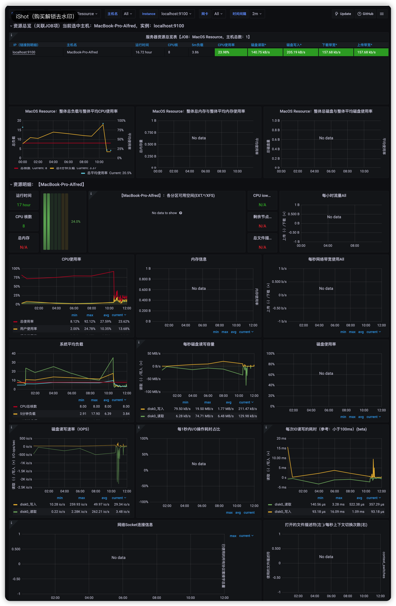

Prometheus-普罗米修斯¶
1.简介¶
Prometheu是一套开源的监控&报警&时间序列数据库的组合, 是时下流行的开源实时监控告警解决方案.
与其他监控系统相比，Prometheus的主要特点是：
- 一个多维数据模型（时间序列由指标名称定义和设置键/值尺寸）。
- 非常高效的存储，平均一个采样数据占~3.5bytes左右，320万的时间序列，每30秒采样，保持60天，消耗磁盘大概228G。
- 一种灵活的查询语言。
- 不依赖分布式存储，单个服务器节点。
- 时间集合通过HTTP上的PULL模型进行。
- 通过中间网关支持推送时间。
- 通过服务发现或静态配置发现目标。
- 多种模式的图形和仪表板支持。
2.组成与架构¶
2.1.架构图¶

2.2.组成¶
Prometheus server: 收集和存储时间序列数据, 定期从配置好的jobs和exporters中拉取metrics，也接收来自Pushgateway发送过来的metrics和从其它的Prometheus server中拉取的metrics。Client Library: 客户端库，为需要监控的服务生成相应的metrics并暴露给Prometheus server。当Prometheus server来pull时，直接返回实时状态的metrics。PushGateway: 对于短暂运行的任务，负责接收和缓存时间序列数据，同时也是一个数据源, 支持接收Client主动推送过来等metrics。Exporter: 各种专用exporter，面向硬件、存储、数据库、HTTP服务等。Alertmanager: 独立于Prometheus的一个组件，可以支持Prometheus的查询语句, 处理报警。Grafana: 度量分析和可视化工具。Web UI等其他各种支持的工具。
2.3.基本原理¶
基本原理是通过HTTP协议周期性抓取被监控组件的状态，这样做的好处是任意组件只要提供HTTP接口就可以接入监控系统，不需要任何SDK或者其他的集成过程。这样做非常适合虚拟化环境比如VM或者Docker。
输出被监控组件信息的HTTP接口被叫做exporter.目前互联网公司常用的组件大部分都有exporter可以直接使用，比如Varnish、Haproxy、Nginx、MySQL、Linux 系统信息 (包括磁盘、内存、CPU、网络等等)，具体支持的源看：https://github.com/prometheus。
2.4.数据类型¶
为了支持一些查询，有时还会临时产生一些时间序列存储。
metrics name & label指标名称和标签
每条时间序列是由唯一的"指标名称"和一组"标签（key=value）"的形式组成。
指标名称：一般是给监测对像起一名字，例如http_requests_total这样，它有一些命名规则，可以包字母数字之类的的。通常是以应用名称开头监测对像数值类型单位这样。例如：push_total、userlogin_mysql_duration_seconds、app_memory_usage_bytes。
标签：就是对一条时间序列不同维度的识别了，例如一个http请求用的是POST还是GET，它的endpoint是什么，这时候就要用标签去标记了。
最终形成的标识：http_requests_total{method="POST",endpoint="/api/tracks"}。
数值类型:
Counter: 用于累计值，一直增加，不会减少, 重启进程后会被重置。可记录例如: 请求次数、任务完成数、错误发生次数。Gauge: 常规数值, 仪表盘数据，可变大，可变小。重启进程后会被重置。可记录例如: 状态码、并发请求数、温度变化、内存使用变化。Histogram: 直方图, 常用于跟踪事件发生的规模，它特别之处是可以对记录的内容进行分组，提供count和sum全部值的功能。可记录例如：请求耗时、响应大小。Summary: 和Histogram十分相似，常用于跟踪事件发生的规模，同样提供count和sum全部值的功能。它提供一个quantile的功能，可以按百分比划分跟踪的结果。例如：quantile取值 0.95，表示取采样值里面的95%数据。可记录例如：请求耗时、响应大小。
Summary和Histogram区别:
Histogram通过histogram_quantile函数是在服务器端计算分位数,Sumamry的分位数则是直接在客户端计算完成。- 对于prometheus服务端而言,
Summary在通过PromQL进行查询时有更好的性能表现，而Histogram则会消耗更多的资源.- 对于客户端而言,
Histogram消耗的资源更少.
3.安装¶
下载镜像包
docker pull prom/node-exporterdocker pull prom/prometheusdocker pull grafana/grafana
4.prometheus配置¶
4.1.prometheus.yml文件¶
Example:
[root@node00 prometheus]# cat prometheus.yml.default
# my global config
global:
scrape_interval: 15s # Set the scrape interval to every 15 seconds. Default is every 1 minute.
evaluation_interval: 15s # Evaluate rules every 15 seconds. The default is every 1 minute.
# scrape_timeout is set to the global default (10s).
# Alertmanager configuration
alerting:
alertmanagers:
- static_configs:
- targets:
# - alertmanager:9093
# Load rules once and periodically evaluate them according to the global 'evaluation_interval'.
rule_files:
- "first_rules.yml"
# - "second_rules.yml"
# A scrape configuration containing exactly one endpoint to scrape:
# Here it's Prometheus itself.
scrape_configs:
# The job name is added as a label `job=<job_name>` to any timeseries scraped from this config.
- job_name: 'prometheus'
# metrics_path defaults to '/metrics'
# scheme defaults to 'http'.
static_configs:
- targets: ['localhost:9090']
配置项:
global: 指定的是prometheus的全局配置， 比如采集间隔，抓取超时时间等。rule_files: 指定报警规则文件， prometheus根据这些规则信息，会推送报警信息到alertmanager中。scrape_configs: 指定抓取配置，prometheus的数据采集通过此片段配置。alerting: 指定报警配置， 这里主要是指定prometheus将报警规则推送到指定的alertmanager实例地址。remote_write: 指定后端的存储的写入API地址。remote_read: 指定后端的存储的读取API地址。
4.1.1.Global配置参数¶
scrape_interval: 采集间隔scrape_timeout: 采集超时evaluation_interval: 评估规则的间隔external_labels: 外部标签设置<labelname>:<labelvalue>- ...
4.1.2.scrape_config配置参数¶
scrape_interval: 抓取间隔,默认继承global值。scrape_timeout: 抓取超时时间,默认继承global值。metric_path: 抓取路径， 默认是/metricsscheme: 指定采集使用的协议，http或者https。params: 指定url参数。basic_auth: 指定认证信息。
scrape_configs:
- job_name: service-x
# HTTP basic 认证信息
basic_auth:
username: alfred
password: "123456"
scrape_interval: 30s # 对于该job, 多久收集一次数据
scrape_timeout: 15s
sample_limit: 1000 # 每次 收集 样本数据的限制. 0 为不限制
metrics_path: /my_path # 从目标 获取数据的 HTTP 路径
scheme: https # 配置用于请求的协议方案
tls_config: 收集 数据的 TLS 设置.
scrape_configs:
- job_name: service-y
# 收集 数据的 TLS 设置
tls_config:
cert_file: valid_cert_file
key_file: valid_key_file
bearer_token: mysecret
*_sd_configs: 指定服务发现配置file_sd_configs: 通过file_fd_files配置后我们可以在不重启prometheus的前提下， 修改对应的采集文件（node_dis.yml）， 在特定的时间内（refresh_interval），prometheus会完成配置信息的载入工作。example如下:
scrape_configs:
- job_name: 'prometheus'
# metrics_path defaults to '/metrics'
# scheme defaults to 'http'.
static_configs:
- targets: ['localhost:9090']
- job_name: "node0"
file_sd_configs:
- refresh_interval: 1m
files:
- "/usr/local/prometheus/prometheus/conf/node*.yml"
dns_sd_configs: DNS 服务发现 配置列表
scrape_configs:
- job_name: "node1"
# DNS 服务发现 配置列表
dns_sd_configs:
- refresh_interval: 15s
names: # 要查询的DNS域名列表
- first.dns.address.domain.com
- second.dns.address.domain.com
- names:
- first.dns.address.domain.com
# refresh_interval defaults to 30s.
consul_sd_configs: consul 服务发现 配置列表,需要下载安装.kubernetes_sd_configs: k8s服务 发现 列表.job_name: 任务名static_configs: 静态指定服务job(与job_name搭配)。targets: 静态的IP端口列表, example如下:
scrape_configs:
- job_name: 'prometheus'
# metrics_path defaults to '/metrics'
# scheme defaults to 'http'.
static_configs:
- targets: ['localhost:9090']
- job_name: "node2"
static_configs:
- targets:
- "192.168.100.10:20001"
- "192.168.100.11:20001
- "192.168.100.12:20001"
relabel_config: relabel设置。
4.1.3.rule_files配置¶
global:
...
scrape_configs:
...
rule_files:
- "first.rules"
- "conf/rules/service_down.yml"
4.1.4.alerting配置¶
# Alertmanager相关的配置
alerting:
alertmanagers:
- scheme: https
static_configs:
- targets:
- "1.2.3.4:9093"
- "1.2.3.5:9093"
- "1.2.3.6:9093"
4.1.5.remote_write/remote_read配置¶
# 远程写入功能相关的设置
remote_write:
- url: http://remote1/push
write_relabel_configs:
- source_labels: [__name__]
regex: expensive.*
action: drop
- url: http://remote2/push
# 远程读取相关功能的设置
remote_read:
- url: http://remote1/read
read_recent: true
- url: http://remote3/read
read_recent: false
required_matchers:
job: special
4.2.规则文件配置¶
如: service_down.yml
groups:
- name: <string>
rules:
- alert: <string>
expr: <string>
for: [ <duration> | default 0 ]
labels:
[ <lable_name>: <label_value> ]
annotations:
[ <lable_name>: <tmpl_string> ]
解释:
name: 警报规则组的名称alert: 警报规则的名称for: 持续时间expr: 使用PromQL表达式完成的警报触发条件，用于计算是否有满足触发条件<lable_name>: <label_value>: 自定义标签，允许自行定义标签附加在警报上annotations: 用来设置有关警报的一组描述信息，其中包括自定义的标签，以及expr计算后的值。
一个告警在生命周期会有三种状态:
- Inactive: 正常状态，未激活警报.
- Pending: 已满足触发条件，但没有满足发送时间条件，此条件就是上面rules范例中的 for 5m 子句中定义的持续时间.
- Firing: 满足条件，且超过了 for 子句中的的指定持续时间5m.
4.3.被监控端配置¶
4.3.1.linux 主机监控¶
在被监控服务器上下载并安装 Node Exporter.
Node Exporter 是一款收集系统 CPU、磁盘、内存用量信息并将它们公开以供抓取的工具。
node_exporter -h # 查看命令选项
常用可视化Grafana Dashboard 模板: 8919、1860
如图:

4.3.2.后端服务监控¶
方案:
- Custom exporter: 自定义export
- Deploy PushGateway
- monitor log file: 监控日志
这里示例在后端服务中埋点监控:
- 在
prometheus.yml配置中添加:
- job_name: 'api_monitor'
scrape_interval: 5s
static_configs:
- targets: ['ip:port'] # 监控脚本所在服务器
labels:
group: 'api'
- 在服务后端,添加client配置和metric接口
常用可视化Grafana Dashboard 模板: 9528、12693
参考: promethues + flask flask实现站点exporter API监控案例 Prometheus+PushGateway+Python实现服务监控 prometheus_flask_exporter
4.3.3.日志监控¶
工具:
- grok_exporter
- mtail
参考: Prometheus-日志监控
4.4.AlertManager告警推送¶
告警有三种状态：
- 初始触发阈值，生成alert并置alert状态=pending；
- 当该alert在pending维持一定时间(如for 3m)，alert状态=Firing； prometheus通过HTTP POST发送alert给alertManager；
- 当alert不再触发阈值，则alert状态=Inactive；
下载安装和使用:
- 下载并配置AlertManager
# 下载alertmanager
wget https://github.com/prometheus/alertmanager/releases/download/v0.23.0/alertmanager-0.23.0.linux-amd64.tar.gz
# 解压
tar -zxvf alertmanager-0.23.0.linux-amd64.tar.gz
# 重命名文件夹方便输入与记忆
mv alertmanager-0.23.0.linux-amd64.tar.gz alertmanager
# 进入安装目录
cd alertmanager
# 以下为启动命令，可暂时不执行
nohup /root/alertmanager/alertmanager --web.listen-address=:9093 --config.file=/root/alertmanager/alertmanager.yml &
- 配置
# 全局配置
global:
# 该项表示告警标记转为恢复标记后保持多久发送恢复通知，默认为5分钟
resolve_timeout: 10s
# smtp服务器，如果465以及25端口报错可以尝试587端口，25端口需要将tls设置为false
smtp_smarthost: 'smtp.office365.com.cn:587'
# 邮件来自
smtp_from: 'i@test.com'
# 邮箱账户
smtp_auth_username: 'i@test.com'
# 邮箱密码或授权码
smtp_auth_password: 'passwd'
# 启用TLS/SSL
smtp_require_tls: true
# 定义HTML邮件模板
templates:
- 'template/*.tmpl'
# route用来设置报警的分发策略
route:
group_by: ['alertname']
# 组告警等待时间，告警产生后等待10s，如果有同组告警一起发出
group_wait: 10s
# 两组告警的间隔时间
group_interval: 10s
# 重复告警的间隔时间，减少相同邮件的发送频率
repeat_interval: 1h
# 告警推送渠道
receiver: 'email'
# 告警推送方式与渠道，route->receiver 对应 receivers->name
receivers:
- name: 'email'
email_configs:
# 接收人
- to: 'test@qq.com'
# 设定邮箱的内容模板，不设置则使用默认模板
# html: '{{ template "test.html" . }}'
# 接收邮件的标题
headers: { Subject: " 报警邮件"}
# 告警消除是否通知
send_resolved: true
- name: 'web.hook'
webhook_configs:
- url: 'http://127.0.0.1:5001/'
# 告警抑制规则
inhibit_rules:
- source_match:
severity: 'critical'
target_match:
severity: 'warning'
equal: ['alertname', 'dev', 'instance']
- 更新
prometheus.yml
# Alertmanager配置
alerting:
alertmanagers:
- static_configs:
- targets:
- 192.168.80.104:9093
# 加载告警规则文件
rule_files:
- 'rules/*.yml'
4.5.启动¶
执行./prometheus -h 可以看到各个参数的含义，例如：
--web.listen-address="0.0.0.0:9090" 监听端口默认为9090，可以修改只允许本机访问，或者为了安全起见，可以改变其端口号（默认的web服务没有鉴权）
--web.max-connections=512 默认最大连接数：512
--storage.tsdb.path="data/" 默认的存储路径：data目录下
--storage.tsdb.retention.time=15d 默认的数据保留时间：15天。原有的storage.tsdb.retention配置已经被废弃
--alertmanager.timeout=10s 把报警发送给alertmanager的超时限制 10s
--query.timeout=2m 查询超时时间限制默认为2min，超过自动被kill掉。可以结合grafana的限时配置如60s
--query.max-concurrency=20 并发查询数 prometheus的默认采集指标中有一项prometheus_engine_queries_concurrent_max可以拿到最大查询并发数及查询情况
--log.level=info 日志打印等级一共四种：[debug, info, warn, error]，如果调试属性可以先改为debug等级
.....
e.g.
- node_exporter --collector.diskstats --collector.cpu --collector.meminfo
- prometheus --config.file="/usr/local/etc/prometheus.yml"
重新加载yaml文件:
# 第一种，向prometheus进行发信号
kill -HUP pid
# 第二种，向prometheus发送HTTP请求
# /-/reload只接收POST请求，并且需要在启动prometheus进程时，指定 --web.enable-lifecycle
curl -XPOST http://<prometheus_url>/-/reload
参考: prometheus启动配置
5.PrmeQL查询¶
参考: prometheus配置解析 prometheus配置2 prometheus-rule篇 配置 Prometheus 服务器监控和 Grafana 看板